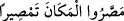
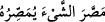

değil mi?”
Fethürrahman’da şöyle denilmiştir: Mısır, İskenderiye’den Nil nehri boyunca
Asvân’a kadar uzanan yerdir. Asvân ise Mısır topraklarında bir beldedir. Kamus’ta da
böyledir.
Ravzatü’l-ahbâr’da şöyle denilmektedir: Mısır, Nûh (a.s.)’ın oğlu Hâm’ın oğlu Mısır
tarafından binâ edilen mâruf ülkedir. Bânîsi sebebiyle Mısır diye isimlendirilmiştir.
Kamus’ta şöyle denilmiştir: “__WORD__/massaru’l-mekâne temsîren” yani orayı
şehir yaptılar, orası da şehir oldu, demektir.
Mısır mâlum ülkedir. Şehirleştiği için bu isim verilmiştir. Yahut Nuh oğlu Mısır bu
ülkeyi kurduğu için bu isim verilmiştir. Bazıları şöyle demiştir: Mısır bilinen ülkedir.
Kişi bir şeyi kesip ayırdığı zaman “__WORD__/massara’ş-şeye yumassıruhu” denir.
Çünkü orası, imar ve onarımla sahradan ayrılmıştır.
“Irmaklar”dan maksad, Nil ve Nil’in kollarıdır. Nitekim Keşfu’l-esrâr’da
belirtildiğine göre, Nil nehri üç yüz altmış kola ayrılmıştır.
Ancak burada kasd edilen ırmaklar, Nil dışındaki dört büyük körfezdir. Bunların en
büyükleri dört ırmaktır. Bunlar; Melik ırmağı -ki bu İskenderiye ırmağı olarak bilinir-,
Tolon ırmağı, Dimyat ırmağı ve Tinnîs ırmağıdır. “Tinnîs” kelimesi bıçak mânâsında
olan “sikkîn” gibidir. Rum denizi adalarından bir adada bulunan aynı zamanda Dimyat
yakınlarında olup değerli elbiseler nispet edilen bir şehirdir. Kamus’ta da böyledir.
Kâşifî şöyle demiştir: Dört büyük ırmak onun bahçesine gidiyor ve saraylarının
altından geçiyordu.
Harîdatü’l-acâib kitabında şöyle denilmektedir: Dünyada Nil nehrinden daha uzun
bir nehir yoktur. Çünkü bu nehrin iki aylık mecrası İslâm ülkesinde, iki aylık mecrası
küfür ülkesinde, iki aylık mecrası insanların bulunduğu mamur bölgede, dört aylık
mesâfesi de harap bölgededir. Çıkış noktası Kamerun dağıdır. Bu bölge ekvator
çizgisinin arkasına düşmektedir. Buraya Kamer dağı denmesi ise ayın bu bölgeye hiç
doğmamasındandır. Çünkü bu dağ ekvator çizgisinin dışında kalır ve ayın nûru, ışığı
oraya ulaşmaz. Ayın ışığı karanlık denizden yani Kara denizden çıkıp Kamer dağının
altına girmektedir. Dünyada Pakistan’daki Mehran ırmağından başka Nil nehrine
benzeyen bir nehir yoktur.
Firavun
“hâlâ
görmüyor
musunuz?”
ifâdesiyle
mülkünün
büyüklüğünü
kasdetmektedir. Abbasi halifesi Harun Reşid bu âyeti okuduğunda, “Vallahi bu şehre en
hasis, en cimri olan köleyi vâli olarak atayacağım” derdi. Nitekim o, buraya abdest
suyunu teminle görevli, siyah tenli ve ahmak bir köle olan Hasib isimli birini vâli
olarak atamıştır. Bu kişide akıl eksikliği ve kifâyetsizlik öyle bir dereceye gelmişti ki
bir gurup Mısır çiftçisi, “Nil kenarına pamuk ekmiştik, ansızın bir yağmur geldi ve
ekilenler telef oldu” diye ona şikâyette bulundular. “Yün ekseydiniz telef olmazdı” dedi.
Bilginlerden birisi bu sözü işittiğinde güldü ve şöyle dedi:
“Eğer servet ilim ile artsaydı,